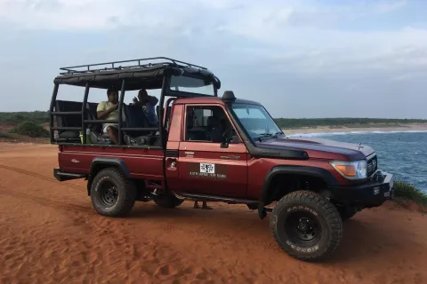

99+ places
SORTED BY TRAVELER FAVOURITES
.webp)
01.Udawalawa National Park: Private Safari
By SL TRO Tours
beautifilu nature and animals

02.Yala National Park: Leopard Safari Full day tour with Lunch
By SL TRO Tours
Discover sights and tastes of Colombo during this full-day city tour. Cover ground quickly in an air-conditioned vehicle and see city landmarks including Gangaramaya Temple, the National Museum of Colombo, and the Old Parliament Building. Relax over an elegant afternoon tea at the Galle Face Hotel. Mor…
.webp)
03. Hambantota: Udawalawe and Elephant Transit Home Day Trip
By SL TRO Tours
(SKU:LK76350100) Tissa wewa is a historic tank/reservoir built by the old kings of Sri Lanka. The beauty of the man made…
.webp)
04. From Anuradhapura: Full-Day Wilpattu National Park Safari
By SL TRO Tours
Make a day trip to Sri Lanka’s Sigiriya Rock and Dambulla Cave Temples stress-free and rewarding with this private tour from Colombo or Negombo. Avoid rushing by sticking to just these
.webp)
05. Kitulgala: 3-Day Private Adventure tour
By SL TRO Tours
This 07 day Canoeing special tour will be a great opportunity to experience the Adventure while witnessing the cultural …
.webp)
06. Udawalawe National Park Private Full-Day Safari
By SL TRO Tours
We will meet you on Dutch Bay, Trincomalee and during this 3 hour cruise on a sailing catamaran, we will in the area of …
.webp)
07. Wasgamuwa: Wasgamuwa National Park Private 3-Hour Safari
By SL TRO Tours
Spot elephants at Udawalawe National Park on this full-day tour from Colombo. Depart from your hotel in a private vehicle and make your way to Udawalawe. Accompanied by a guide, ride a jeep through the national park and see the wid ...
.webp)
08. Hambantota: Udawalawe Safari and Elephant Transit Home Trip
By SL TRO Tours
Forget transport worries and experience three Sri Lanka highlights in one easy day trip on this private tour from Colombo or Negombo. Put your focus on the sights as a private chauffeured vehic. During…
.webp)
09. Galle/Unawatuna/Weligama/Mirissa: Yala National Park Safari
By SL TRO Tours
Our Snorkel Safari adventure takes you out to view dolphins and turtles other large species such as Whales (if they are …
About
More Tours in Sri Lanka
Inland air travel is a growing mode of transport in Sri Lanka among tourists as well as sri lankans alike. At Fly Sri Lanka we offer inland air travel options which can cater to your every need.
In addition to simply taking you from one location to the next by air we can also combine your travel with a variety of tourist activities or if you are a tourist looking for a unique perspective of Sri Lanka we can organize an aerial tour of select locations within Sri Lanka. With this purpose in mind we have created for you a series of value additions which can make your trip to Sri Lanka truly take wings.
Bird's Eye Colombo
Bird's Eye ColomboPackage No: FSP/001 Take off from Ratmalana and fly down south along the coastline and return inland or along the coast itself. This scenic flight gives you an unforgettable tour with a bird's eye view of the iconic city and...>
Explore Sri Lanka by Air
Explore Sri Lanka by Air Package No: FSP/005 We offer the unforgettable opportunity to witness Sri Lanka's extreme natural contrasts from new heights. If you want to get a glimpse of breath taking view of Tea Plantations....
Paramotoring Bentota
Paramotoring Bentota Package No: FSP/002 BIRDS ARE NOT THE ONLY FLIERS. Paramotoring is the newest and latest development in ultra-light foot-launched air sports in Sri Lanka. This is an exhilarating yet simple way to aviate, also being the...
Fly and experience Kandyan Kingdom
Fly and experience the Kandyan Kingdom Package No: FSP/007 Fly Sri Lanka provides the best way to visit Kandy by air!Kandy is a 1½ hour flight away, over varied, and always lovely terrain. See the lush green.
The mount of remembrance
The mount of remembrance Package No: FSP/006 Sigiriya Rock Fortress is most probably the best-known site in Sri Lanka and is an archaeological goldmine. Built by the paranoid King Kashyapa, its mysteries have not yet been deciphered,
Witness the sacred Adam's Peak by Air
Witness the sacred Adam's Peak by Air Package No: FSP/004 “Sri Paada” (Sacred Footprint) or Adam’s Peak Mountain is situated in the South West corner of the central mountain region. Buddhists believe that Load Buddha, during his third
Fly Above Whales
Fly Above WhalesPackage No: FSP/011 Ariel whale watching contributes to responsible tourism with minimal disturbances in their natural habitat yet an environmentally conscious way to get closer to them from the comfort of an aircraft. With warm..
Fly in Safari Yala
Fly in Safari YalaPackage No: FSP/010 With the panoramic view of Indian Ocean, Yala is at the far south-east end of Sri Lanka. 130,000 hectares of land wide Yala is a National Park, wildlife sanctuary and...
Hot Air Ballooning
Hot Air BallooningPackage No: FSP/003 Hot Air Ballooning is an adventure activity which floats on an unknown flight path with the breeze 1000 - 2000 feet above. It gives you a view of spectacular sunrise across
Overnight to the Rock Palace
Overnight to the Rock PalacePackage No: FSP/008A UNESCO listed World Heritage site, Sigiriya is a proof of ancient urban planning. King Kasyapa (477-495 CE) built his palace on the top of 200 meters high rock..
Escape to the East Coast Trincomalee
Escape to the East Coast TrincomaleePackage No: FSP/009Trincomalee is the coastal capital in Eastern Province overlooking one of “the finest natural harbor” which is accessible during any weather by all type of crafts and wel
Read more
1
2
3
4
5
·····
20
ABOUT SL TRAVELERS
Information on listed products and services are provided by the operator and were correct at the time of publishing. Please visit the operator’s website for further information. Sri Lanka Tourism makes no representations whatsoever about any other websites which you may access through this website. Some websites are linked to the Sri Lanka Tourism website but are independent from Sri Lanka Tourism and therefore, are not under the control of Sri Lanka Tourism. Sri Lanka Tourism, therefore, does not endorse or accept any responsibility for the use of websites which are owned or operated by third parties and makes no representation or warranty in relation to the standard, class or fitness for purpose of any services, nor does it endorse or in any respect warrant any products or services by virtue of any information, material or content linked from or to this site.
@SriLankanBestTravels | developed by Suhas | 2022